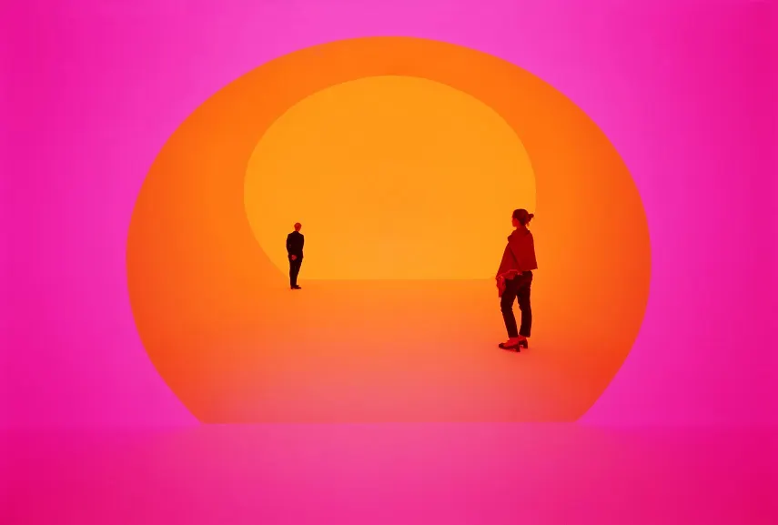

Painting
Six Limbs Of Indian Painting
The Six Limbs of Indian Paintings is called Shadangas. Shadangas is a word formed from two different words."Shad" in Shadanga means six and "Anga" means part. So Shadanga meaning is actually six limbs or six canons of arts on which the whole world's painting was based on during initial years of painting. Shadanga was what use to lay base for the main elements of painting and principles of art in the early centuries or probably first century.
Since ancient times the art and its techniques were studied carefully and it has been always believed that it was first recorded in Chitrasutra of Vishnudharmottara Purana.The oldest ever painting info was recorde in this Purana. The same conons were also discussed in Bharat Muni's sanskrit texts as well. In 20th century (yesss!! the British India ),Abanindranath Tagore, who was the nephew of Rabindranath Tagore analysed the Shdangas and later wrote a great detailed essay on it while citing different examples from everyday life of his. I believe that thre was also a shlok he wrote.
"Roopbhedah pramanani bhava-lavanya-yojanam/
Sadrishyam varnakabhangam iti chitram shadakam //"
well i don't remember the exact meaning but it was listed by the Sage Vatsyayana as a shlok in his written sanskrit script called Kamasutra, which also got quite famous at that time.
1. Roopa-Bheda
'Roopa' means the outer side or like the outer appearance or part like what other sees you from outside.The observation of such forms can aso be mental.'Bheda' on the other hand means differences from the one another in a pulled up comparison. On combing these two words we get the meaning, appearance-differences or what we can also call, differences in appearance. So a painter have to work hard and carefully to examine and study of 'Roop-Bheda' by thid painters would be able to depict the scenes and things as they appear as they truly are and so that their paintings resembles it. The painter needs to know the difference beatween the living and non-living forms and also natural and man-made forms. This knowledge only comes from experience and if not experience then the paintings by that artist would some how feel emotionless on looking. 'Ruchi'. Ruchi plays a very important role in Roop-Bheda (Well you might be wondering why am i using Ruchi instead of interest? Well it sounds cool) . Ruchi helps an artist in achieving a level in creativness and creating a masterpiece.
Suppose Three Artist Paint A Woman
Suppose there are three illustraitors. One of the artist painted a woman dancing gravefully, second painted a woman combing her long black hair and the third painted a woman feeding an infant. Well how will the observer know that the lady dancing is a noble woman practicing dance or a proffesional dance artist or whether the woman combing is a queen or a maid getting ready for her duties or whether the woman feeding the baby is his mother or the caretaker. This can only be determined if the painter depicts the Roop-Bheda elegantly and accordingly. What would be the expression of a queen bride on her face? happiness or simply a court dancer getting ready for her performance.
2.Pramana
So Pramana actually means the correct knowledge of the proportion of different forms. There is a power of "Prama" which teaches us all the exact measure and the distance with logical calculation. This power of "Pramana" is actually present in all human beings. Imagine a prey animal like a deer roaming in a deep jungle. A slight jiggling sounds from bushes could be felt by it whether it's a predator moving sound or some harmless creature roaming. When we paint a landscape,the space has to be divided into different sections like foreground,middle ground and background so that the whole composition can be gathered together to create a harmonous scenario. All these sections altogether consists of area of sky,trees and water bodies. Fusion and mixing of colors such as blue and white or yellow and orange is done to show the line of horizon. This concept of bringing and binding these things together to complete the painting is what we call "The Power of Pramana".
Pramana not only gives us understanding of space but also decides as to how much exposure of a thing or a particular shade/color would make it appropriate and appealing
Bhava
"Bhava" is written in english like this but is actually pronounced like "Bhauv" in hindi which means an emotion,a feeling, a mood, and intention or any idea.This aspect of art or maybe a form of art is expressed when you make a sense of expression on your painting. Well one must have seen in movies and dramas that sometimes the main characters when doing art leave the facial features until they fall in love. Well i do not know what is the relation between these two things but it is what it is.
Now one must have heard someone say "Why are you not expressing your innerself?". So yes!!! There are two types of Bhava-(1)Inner and (2)Outer. Nowdays so called modern paintings are being famous, why? is it because the artist claim that they drew their inner feelings onto the canvas. Of course not all modern art are effortless and just waste of paint. There are some so unreal art that even the artist cannot recreate them even if they want to. Bhava is important in Indian Art culture.If you have heard about Ragamala series, Ragamala uses the Bhavas to bring life to the paintings.
Lavanya-Yojnam
Well the word "Lavanya" kind of already suggest that it has something to do with love. Well it should have been that but the real principle is to take care of the right amount of beauty and grace to be added to a painting. The painting would look very dull and boring if we do not get that elegant sweet smile or those crazy-funny expressions. When we draw eyes we make a small dot of white color in the iris, that is to show the light reflecting or because it looks pretty or what else. Well i do not know about others but i personally never made things if they do not look good when drawn. Like if you add gold or silver to a painting it would give royal vibes on seeing the painting.
Not saying that gold and silver make everything royal beacause just imagine painting a pile of trash mountain silver (well i do not know about that modern art menatality) Again: no hate, uneducated always have something bad to say about the things they never learned (yes me)
Sadrishyam
Bheda means differences and "SADRISHYAM" means 'Similarity' or maybe one could interpret it like resemblence, equality of forms and ideas. A picture must give right expression and right resemblance. Even a small inch of the canvas can speak volumes about the painting. This is perhaps the most challenging part of creating an art." The art must depict what you wanted to shwo without actualling spilling out a single word".
In Indian Literature, from starting shape of eyes is often compared to forms like fish ( idk why fish?),lotus petals etc.The black curly hairs of women were always compared with the snake and black clouds (not a bad thing).I do not know why curly hair used to be compimented then and now if you have curly hair then maybe you are having bad hair! Did not take care of it! WOWWWWWW!. Women were also drawn as godesses and their smiles were called devine. In Indian ancient painting era over 32 lakhs paintings and sculptures are on Buddha. Well i went to Delhi Museum and i swear there were so many sculptures of Gautam Budha
Fundamentals of Visual Art
Elements of Arts
Any artwork or painting begins with a sketch or a scribble with basic tools like a pencil,scale eraser or a brush. A dot on a single page is concerted into line and the line altogether forms the sketch, it takes form which can be recognised as an object. You can also call these steps as lego blocks ....you join all the composition in creating something magical and beautiful. These basics not only help in better learning of the skill but also in appreciating art.So let's try to understand them better.
1.Point
Point-the simplest thing ever to be discovered. It is the first and simplest element of art. It has every small existance but can still act as a focus of a visual. When several points are joined /combined together, they become more effective as they start having path that finally forms a line.
2.Line
A line is what is formed from a point as i said in the previous title.Line is said to be art taking space. For any shape, size or surface, we put a point and starts srawing all kings of lines . When these lines are drawn from one point to the other then it becomes a drawing/sketch, something which possess a meaning when scene. We all have studied about lines when we were in 3rd grade ( idk about other countries ) in the Maths subject. We at that time also learned that line has a direction as well as position. Whether straight or cuved, it tends to draw our eyesalong with it

If we are talking about lines then how can we not mention about its type (well not the math ones).Different line carries different importance. For example we made a thin line but you are not able to emphasize that part from the drawing then you make the line thick. You never knew about the line types but you tend to do that with your common sense (well all the theory in painting is just common sense stuff got named).Lines creat a number of visual effects and emotions. Some of them are as follows:
- The lines have sharpness and fitness
- Bold lines shows emphasis and draws attrntion towards themselves.
- Vertical lines are drawn to show heighy, dignity and strength (we draw gods to the height of clouds in front of humsn figures)
- Horizontal lines are drawn to show calmness anf preace
- Diagonal lines are used for showing restlessness and gives us a sense of movement.
- Conical lines shwos clashing and stiffness related stuff
- Radial lines shows grace and elegance (idk how ...the word sounds nice)
- Spiral lines when drawn shows engaging motion and mystery.
3.Shape and Form.
Shape is two dimensional figure drawn or created when we join different points together through a line. It possesses a height and width. Whereas form is a threww dimensional figure with width height and also depth. In other words one can say....that form is a shape with volume,depth and also mass.For example, cone is form originated from the triangle shape.It has volume,mass.height,width and depth. Similarly circle is a shape and sphere is the form.
With shapes and lines we had also learned about that symmentrical and asymmentrical stuff.(i do not think that i need to tell but anyways). Forms can be symmentrical as well as asymmetrical (also called organic).In symmetrical forms one side is equal to the other half,or both are identical to each other . For example a line of symmetry divides a sphere into two equal half.Just like different kinds of lines having different effect,forms too have different effects.For example a circular form gives a sense of fullness.
4.Colors.
Color!! Those simple stick colors play a very important role in our life. Everything around us can only be seen, differentiated and remembered only because of colours. Imagine this in real life guys. Even there are only very rare cases where color blind people are not able to see colors at all, all they se is black, white and grey according to intensity o colors. Colors has a great influence on us. Nowadays we also use mood colours right? Red is for some horror or romance, blue for calmness and thriller, white for peace and etc. So we can clearly say that there are psycological effects of colours.
Hue
Hue is just a very modern and stylish way to call colors. Colors is counted as a property possessed by an object to create or produce different sensations with the help of reflection of light reaching the surface of Earth.
Types of Colours
On the basis of purity colors were divided into three types. (i) Primary (ii) Secondary (iii) Tertiary
i. Primary Colors : -Primary colors are the colors used in making any shade But even secondary can do too right?, Primary colors are the colors which cannot be obtined by mixing of colors.They are pure and obtained from nature.Primary colors are blue red and yellow.
ii. Secondary Colors:-Secondary colors are obtained from mixing of two or more primary colors.We also only have three secondary colors (i myself used to think that there would be lot more before studying painting.).The secondary colors are- violet, orange, green. example:-
Red + Blue = Violet
Blue + Yellow = Green
red + Yellow = Orange
iii. Tertiary Colors : - Tertiary colors are formed when we mix primary and secondary colors together with one another .It is said that there are unlimited tirtiary colors so there are unlimated colors which also do not have their own name set. Let's take a color like violet and you grab white . Now if you mix fifty percent of each it will form color A and if you mix twenty percent from violet and eighty percent of white, then it will form color B. On comparing both A and B you can notice the shade difference in both the colors formed . For example:-
Violet + Blue = Indigo
Orange + Red = Saffron
Yellow + Orange = Golden Yellow
of course why only these classifications.....We also have classification on the basis something which i do not know (there is no name for this further classification)
a. Analogous Colors :- This is just unncecesary fancy names for all the shades of same colors. Or one could say that color of same category.
b. Complimentary or opposite Colors :- The Complimentary colours are obtained by mixing two primary colors is also opposite or complimentary to the third. So it is not secondary color. Example:-
Blue + Yellow = Green (which is opposite to red)
Red + Yellow = Orange (which is opposite to Blue)
Blue + Red = Violet (which is opposite to Yellow)
c. Warm and Cool Colors :- The colors which give the illusion of heat and have the maximum wavelenghth , they are warm colors. Example- Red, Yellow and their shades by mixing both. The colors which give the effect of coolness and have minimum wavelenghth are caled cool colors. Example- Blue, Green and their shades by mixing.
d. Neutral Colors :-These are those colors which are neither strong nor bright and does not have any warm and cool effect. Example- Black ,White and shades of Brown and Grey.
Three Properties of Colors
Hue :- It is a true color like-red, yellow and violet are all hues.
Value :- It is the degree of lightness and darkness of a color (different values can be used for reflection as well as shadows)
Red + White = Pink (Tint)
Red + Black = Maroon (Tone)
Intensity :- It is called as the strength of the color, brightness or dullness. By taking some examples, Magenta is a bright color where as olive green is a dull color in itself. Each color is beautiful in it's own way. If not used correctly ,it can create a huge color messy art without any great sense of color taste (again pls do not judge my site colors...i am not a professional)
5. Tone
I have mentioned the word tone in the above section. Tone or a value is the lightness and darkness of a color. One must have also heard the word contrast. Contrast is the difference between the values of two tones.Tonal values is what helps in creating dark areas and highlighted areas from other dull ones. For example, when we are asked to draw a sphere we just draw a circle and shade it in circular motion so it looks and takes shape of a sphere (ball). We also leave the upper corner a little lighter shade to show roundness of the sphere. Toning helps in giving a sense of volume,depth and distance.
6. Space

Forms and shapes to be seen clearly, we need space around them to create a sense of border or edge of the shape that defines the whole form. If no space would be given between two lines, it would strain our eyes when we try to concentrate on a particular shape or find one. Shape is essential. Why do we give space mardins and borders to a document? Yes, to make it appear clear,neat and proper.Just imagine youself in your room with so many people that there is not even a space for you to walk. Will it not feel suffocating? Technically these spaces are termed as positive space and negative space. The study of these elements in arts is necessary to bring out all the desired effects from the painting.
Important Terminology
There are some important terminology required for all forms of art. Given below are the terminology :-
1. Perspective
2. Vanishing Point
3. Foreshortening
4. Foreshortened
5. Abstraction
6. Stylization

nn